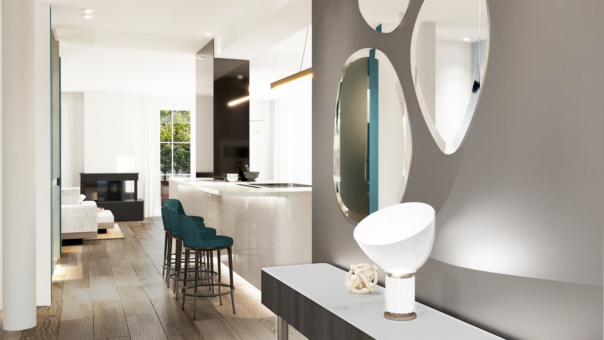
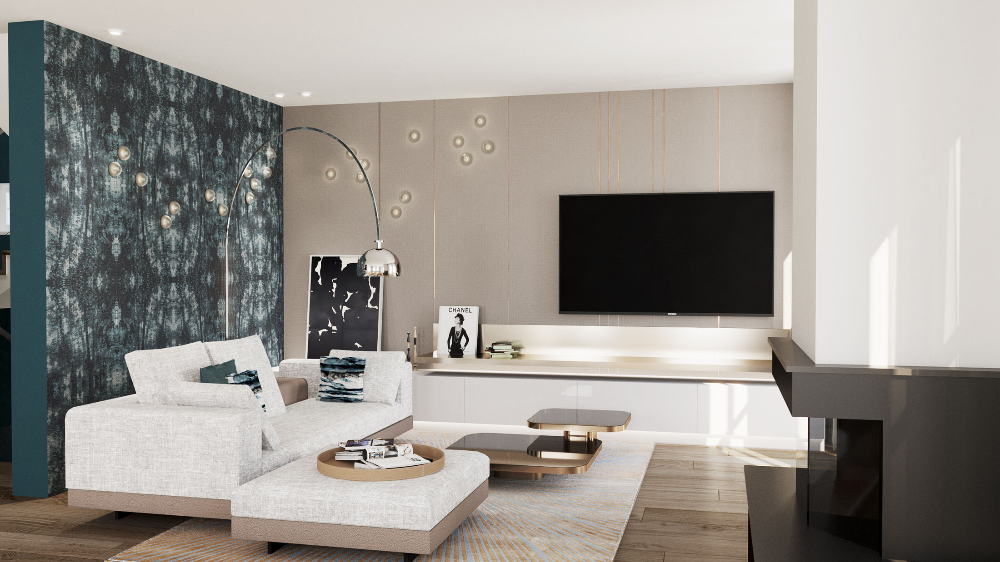
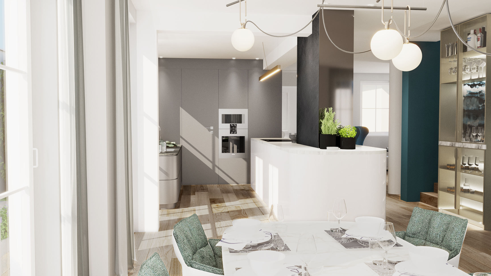

Mit starken Blickbezügen und der Öffnung des Grundrisses erhält das Wohnhaus einen modernen, loftartigen Charakter.
In Müngersdorf galt es einen neuen Entwurf eines bestehenden Wohnhauses zu entwickeln. Hauptanliegen war den starren und unvorteilhaften Grundriss in einen modernen und großzügigen Wohnraum zu verwandeln.
Der Eingangsbereich erhält aufgrund seiner Großzügigkeit neben Stauraum einen qualitativen Sitzbereich. Die Spiegelwand vergrößert spielerisch den Bereich des Ankommens und lenkt den Fokus auf die strukturierte Tapete, die dem Durchgangsbereich Behaglichkeit verleiht.
Die Öffnung des Grundrisses lässt den Blick bis in das Wohnzimmer gleiten - die Kücheninsel fungiert hier als verbindendes Element. Als Herzstück ist diese heller als der restliche Küchenkern und hebt sich gekonnt ab. Als Abtrennung zum Erschließungskern ist eine Bar mit Pocket-doors und ausziehbarer Arbeitsfläche vorgesehen.
Das Wohnzimmer ist in einen großzügigen Ess- und Wohnbereich unterteilt.
Ein starker Kontrast zur vorwiegend hell gehaltenen Gestaltung bildet hierzu die dunkle Tapete im Wohnzimmer, die auch haptisch einen absoluten Blickfang darstellt. Die wiederholt auftretenden Kontraste in dunklen Blautönen bilden den Blickfang der ausgestalteten Räumlichkeiten und setzen Fokusse neu.
Büro: studio a.s.h.
Programme: SketchUp & VRAY